Disclaimer: RACES/rRACES internally implements the probability distributions using the C++11 random number distribution classes. The standard does not specify their algorithms, and the class implementations are left free for the compiler. Thus, the simulation output depends on the compiler used to compile RACES, and because of that, the results reported in this article may differ from those obtained by the reader.
Once a phylogenetic forest has been computed, as detailed in
vignette("mutations"), rRACES can simulate the sequencing
of the samples in the forest and return the observed data.
Sequencing Simulation
Let us reload the phylogenetic forest produced in
vignette("mutations").
library(rRACES)
phylo_forest <- load_phylogenetic_forest("phylo_forest.sff")
#> [█---------------------------------------] 0% [00m:00s] Loading forest [████------------------------------------] 8% [00m:01s] Loading forest [█████-----------------------------------] 12% [00m:02s] Loading forest [███████---------------------------------] 16% [00m:03s] Loading forest [█████████-------------------------------] 20% [00m:04s] Loading forest [██████████------------------------------] 23% [00m:05s] Loading forest [███████████-----------------------------] 27% [00m:06s] Loading forest [█████████████---------------------------] 31% [00m:07s] Loading forest [███████████████-------------------------] 35% [00m:08s] Loading forest [████████████████------------------------] 38% [00m:09s] Loading forest [█████████████████-----------------------] 41% [00m:10s] Loading forest [██████████████████----------------------] 44% [00m:12s] Loading forest [███████████████████---------------------] 47% [00m:13s] Loading forest [█████████████████████-------------------] 51% [00m:14s] Loading forest [███████████████████████-----------------] 55% [00m:15s] Loading forest [████████████████████████----------------] 58% [00m:16s] Loading forest [█████████████████████████---------------] 62% [00m:17s] Loading forest [███████████████████████████-------------] 66% [00m:18s] Loading forest [█████████████████████████████-----------] 70% [00m:19s] Loading forest [██████████████████████████████----------] 74% [00m:20s] Loading forest [████████████████████████████████--------] 78% [00m:21s] Loading forest [█████████████████████████████████-------] 82% [00m:22s] Loading forest [███████████████████████████████████-----] 86% [00m:23s] Loading forest [█████████████████████████████████████---] 90% [00m:24s] Loading forest [██████████████████████████████████████--] 94% [00m:25s] Loading forest [████████████████████████████████████████] 98% [00m:26s] Loading forest [████████████████████████████████████████] 100% [00m:27s] Forest loaded
phylo_forest
#> PhylogeneticForest
#> # of trees: 1
#> # of nodes: 18845
#> # of leaves: 5396
#> samples: {"S_1_1", "S_1_2", "S_2_1", "S_2_2"}
#>
#> # of emerged SNVs and indels: 113353
#> # of emerged CNAs: 39The loaded phylogenetic forest models the cell evolution of 4
different samples: S_1_1, S_1_2,
S_2_1, and S_2_2.
We can simulate the sequencing of these samples with coverage of 2.5X by as it follows.
# let us simulate a 50x sequencing of the four sample
seq_results <- simulate_seq(phylo_forest, coverage = 30)
#> [█---------------------------------------] 0% [00m:00s] Found 22 [█---------------------------------------] 0% [00m:00s] Reading 22 [█---------------------------------------] 0% [00m:00s] Reading 22 [█---------------------------------------] 0% [00m:02s] Reading 22 [█---------------------------------------] 0% [00m:02s] Processing chr. 22 [█---------------------------------------] 0% [00m:08s] Processing chr. 22 [█---------------------------------------] 0% [00m:09s] Processing chr. 22 [█---------------------------------------] 0% [00m:10s] Processing chr. 22 [█---------------------------------------] 1% [00m:11s] Processing chr. 22 [█---------------------------------------] 1% [00m:12s] Processing chr. 22 [█---------------------------------------] 1% [00m:13s] Processing chr. 22 [█---------------------------------------] 2% [00m:14s] Processing chr. 22 [█---------------------------------------] 2% [00m:15s] Processing chr. 22 [█---------------------------------------] 2% [00m:16s] Processing chr. 22 [██--------------------------------------] 3% [00m:17s] Processing chr. 22 [██--------------------------------------] 3% [00m:18s] Processing chr. 22 [██--------------------------------------] 3% [00m:19s] Processing chr. 22 [██--------------------------------------] 4% [00m:20s] Processing chr. 22 [██--------------------------------------] 4% [00m:21s] Processing chr. 22 [██--------------------------------------] 4% [00m:22s] Processing chr. 22 [███-------------------------------------] 5% [00m:23s] Processing chr. 22 [███-------------------------------------] 5% [00m:24s] Processing chr. 22 [███-------------------------------------] 5% [00m:25s] Processing chr. 22 [███-------------------------------------] 6% [00m:26s] Processing chr. 22 [███-------------------------------------] 6% [00m:27s] Processing chr. 22 [███-------------------------------------] 6% [00m:28s] Processing chr. 22 [███-------------------------------------] 7% [00m:29s] Processing chr. 22 [███-------------------------------------] 7% [00m:30s] Processing chr. 22 [███-------------------------------------] 7% [00m:31s] Processing chr. 22 [████------------------------------------] 8% [00m:32s] Processing chr. 22 [████------------------------------------] 8% [00m:33s] Processing chr. 22 [████------------------------------------] 8% [00m:34s] Processing chr. 22 [████------------------------------------] 9% [00m:35s] Processing chr. 22 [████------------------------------------] 9% [00m:36s] Processing chr. 22 [█████-----------------------------------] 10% [00m:37s] Processing chr. 22 [█████-----------------------------------] 10% [00m:38s] Processing chr. 22 [█████-----------------------------------] 10% [00m:39s] Processing chr. 22 [█████-----------------------------------] 11% [00m:40s] Processing chr. 22 [█████-----------------------------------] 11% [00m:41s] Processing chr. 22 [█████-----------------------------------] 11% [00m:42s] Processing chr. 22 [█████-----------------------------------] 12% [00m:43s] Processing chr. 22 [█████-----------------------------------] 12% [00m:44s] Processing chr. 22 [█████-----------------------------------] 12% [00m:45s] Processing chr. 22 [██████----------------------------------] 13% [00m:46s] Processing chr. 22 [██████----------------------------------] 13% [00m:47s] Processing chr. 22 [██████----------------------------------] 13% [00m:48s] Processing chr. 22 [██████----------------------------------] 14% [00m:49s] Processing chr. 22 [██████----------------------------------] 14% [00m:50s] Processing chr. 22 [██████----------------------------------] 14% [00m:51s] Processing chr. 22 [███████---------------------------------] 15% [00m:52s] Processing chr. 22 [███████---------------------------------] 15% [00m:53s] Processing chr. 22 [███████---------------------------------] 15% [00m:54s] Processing chr. 22 [███████---------------------------------] 16% [00m:55s] Processing chr. 22 [███████---------------------------------] 16% [00m:56s] Processing chr. 22 [███████---------------------------------] 17% [00m:57s] Processing chr. 22 [███████---------------------------------] 17% [00m:58s] Processing chr. 22 [███████---------------------------------] 17% [00m:59s] Processing chr. 22 [████████--------------------------------] 18% [01m:00s] Processing chr. 22 [████████--------------------------------] 18% [01m:01s] Processing chr. 22 [████████--------------------------------] 18% [01m:02s] Processing chr. 22 [████████--------------------------------] 19% [01m:03s] Processing chr. 22 [████████--------------------------------] 19% [01m:04s] Processing chr. 22 [████████--------------------------------] 19% [01m:05s] Processing chr. 22 [█████████-------------------------------] 20% [01m:06s] Processing chr. 22 [█████████-------------------------------] 20% [01m:07s] Processing chr. 22 [█████████-------------------------------] 20% [01m:08s] Processing chr. 22 [█████████-------------------------------] 21% [01m:09s] Processing chr. 22 [█████████-------------------------------] 21% [01m:10s] Processing chr. 22 [█████████-------------------------------] 21% [01m:11s] Processing chr. 22 [█████████-------------------------------] 22% [01m:12s] Processing chr. 22 [█████████-------------------------------] 22% [01m:13s] Processing chr. 22 [█████████-------------------------------] 22% [01m:14s] Processing chr. 22 [██████████------------------------------] 23% [01m:15s] Processing chr. 22 [██████████------------------------------] 23% [01m:16s] Processing chr. 22 [██████████------------------------------] 23% [01m:17s] Processing chr. 22 [██████████------------------------------] 23% [01m:18s] Processing chr. 22 [██████████------------------------------] 23% [01m:19s] Processing chr. 22 [██████████------------------------------] 24% [01m:20s] Processing chr. 22 [██████████------------------------------] 24% [01m:21s] Processing chr. 22 [██████████------------------------------] 24% [01m:22s] Processing chr. 22 [███████████-----------------------------] 25% [01m:23s] Processing chr. 22 [███████████-----------------------------] 25% [01m:24s] Processing chr. 22 [███████████-----------------------------] 25% [01m:25s] Processing chr. 22 [███████████-----------------------------] 26% [01m:26s] Processing chr. 22 [███████████-----------------------------] 26% [01m:27s] Processing chr. 22 [███████████-----------------------------] 26% [01m:28s] Processing chr. 22 [███████████-----------------------------] 27% [01m:29s] Processing chr. 22 [███████████-----------------------------] 27% [01m:30s] Processing chr. 22 [███████████-----------------------------] 27% [01m:31s] Processing chr. 22 [████████████----------------------------] 28% [01m:32s] Processing chr. 22 [████████████----------------------------] 28% [01m:33s] Processing chr. 22 [████████████----------------------------] 28% [01m:34s] Processing chr. 22 [████████████----------------------------] 29% [01m:35s] Processing chr. 22 [████████████----------------------------] 29% [01m:36s] Processing chr. 22 [████████████----------------------------] 29% [01m:37s] Processing chr. 22 [█████████████---------------------------] 30% [01m:38s] Processing chr. 22 [█████████████---------------------------] 30% [01m:39s] Processing chr. 22 [█████████████---------------------------] 30% [01m:40s] Processing chr. 22 [█████████████---------------------------] 31% [01m:41s] Processing chr. 22 [█████████████---------------------------] 31% [01m:42s] Processing chr. 22 [█████████████---------------------------] 31% [01m:43s] Processing chr. 22 [█████████████---------------------------] 32% [01m:44s] Processing chr. 22 [█████████████---------------------------] 32% [01m:45s] Processing chr. 22 [██████████████--------------------------] 33% [01m:46s] Processing chr. 22 [██████████████--------------------------] 33% [01m:47s] Processing chr. 22 [██████████████--------------------------] 33% [01m:48s] Processing chr. 22 [██████████████--------------------------] 34% [01m:49s] Processing chr. 22 [██████████████--------------------------] 34% [01m:50s] Processing chr. 22 [██████████████--------------------------] 34% [01m:51s] Processing chr. 22 [███████████████-------------------------] 35% [01m:52s] Processing chr. 22 [███████████████-------------------------] 35% [01m:53s] Processing chr. 22 [███████████████-------------------------] 35% [01m:54s] Processing chr. 22 [███████████████-------------------------] 36% [01m:55s] Processing chr. 22 [███████████████-------------------------] 36% [01m:56s] Processing chr. 22 [███████████████-------------------------] 36% [01m:57s] Processing chr. 22 [███████████████-------------------------] 37% [01m:58s] Processing chr. 22 [███████████████-------------------------] 37% [01m:59s] Processing chr. 22 [███████████████-------------------------] 37% [02m:00s] Processing chr. 22 [████████████████------------------------] 38% [02m:01s] Processing chr. 22 [████████████████------------------------] 38% [02m:02s] Processing chr. 22 [████████████████------------------------] 38% [02m:03s] Processing chr. 22 [████████████████------------------------] 39% [02m:04s] Processing chr. 22 [████████████████------------------------] 39% [02m:05s] Processing chr. 22 [█████████████████-----------------------] 40% [02m:06s] Processing chr. 22 [█████████████████-----------------------] 40% [02m:07s] Processing chr. 22 [█████████████████-----------------------] 40% [02m:08s] Processing chr. 22 [█████████████████-----------------------] 41% [02m:09s] Processing chr. 22 [█████████████████-----------------------] 41% [02m:10s] Processing chr. 22 [█████████████████-----------------------] 41% [02m:11s] Processing chr. 22 [█████████████████-----------------------] 42% [02m:12s] Processing chr. 22 [█████████████████-----------------------] 42% [02m:13s] Processing chr. 22 [█████████████████-----------------------] 42% [02m:14s] Processing chr. 22 [██████████████████----------------------] 43% [02m:15s] Processing chr. 22 [██████████████████----------------------] 43% [02m:16s] Processing chr. 22 [██████████████████----------------------] 43% [02m:17s] Processing chr. 22 [██████████████████----------------------] 44% [02m:18s] Processing chr. 22 [██████████████████----------------------] 44% [02m:19s] Processing chr. 22 [██████████████████----------------------] 44% [02m:20s] Processing chr. 22 [███████████████████---------------------] 45% [02m:21s] Processing chr. 22 [███████████████████---------------------] 45% [02m:22s] Processing chr. 22 [███████████████████---------------------] 46% [02m:23s] Processing chr. 22 [███████████████████---------------------] 46% [02m:24s] Processing chr. 22 [███████████████████---------------------] 46% [02m:25s] Processing chr. 22 [███████████████████---------------------] 47% [02m:26s] Processing chr. 22 [███████████████████---------------------] 47% [02m:27s] Processing chr. 22 [███████████████████---------------------] 47% [02m:28s] Processing chr. 22 [████████████████████--------------------] 48% [02m:29s] Processing chr. 22 [████████████████████--------------------] 48% [02m:30s] Processing chr. 22 [████████████████████--------------------] 48% [02m:31s] Processing chr. 22 [████████████████████--------------------] 48% [02m:32s] Processing chr. 22 [████████████████████--------------------] 48% [02m:33s] Processing chr. 22 [████████████████████--------------------] 49% [02m:34s] Processing chr. 22 [████████████████████--------------------] 49% [02m:35s] Processing chr. 22 [████████████████████--------------------] 49% [02m:36s] Processing chr. 22 [████████████████████--------------------] 49% [02m:37s] Processing chr. 22 [█████████████████████-------------------] 50% [02m:38s] Processing chr. 22 [█████████████████████-------------------] 50% [02m:39s] Processing chr. 22 [█████████████████████-------------------] 50% [02m:40s] Processing chr. 22 [█████████████████████-------------------] 50% [02m:41s] Processing chr. 22 [█████████████████████-------------------] 50% [02m:42s] Processing chr. 22 [█████████████████████-------------------] 51% [02m:43s] Processing chr. 22 [█████████████████████-------------------] 51% [02m:44s] Processing chr. 22 [█████████████████████-------------------] 51% [02m:45s] Processing chr. 22 [█████████████████████-------------------] 51% [02m:46s] Processing chr. 22 [█████████████████████-------------------] 51% [02m:47s] Processing chr. 22 [█████████████████████-------------------] 52% [02m:48s] Processing chr. 22 [█████████████████████-------------------] 52% [02m:49s] Processing chr. 22 [█████████████████████-------------------] 52% [02m:50s] Processing chr. 22 [█████████████████████-------------------] 52% [02m:51s] Processing chr. 22 [██████████████████████------------------] 52% [02m:52s] Processing chr. 22 [██████████████████████------------------] 52% [02m:53s] Processing chr. 22 [██████████████████████------------------] 52% [02m:54s] Processing chr. 22 [██████████████████████------------------] 52% [02m:55s] Processing chr. 22 [██████████████████████------------------] 52% [02m:56s] Processing chr. 22 [██████████████████████------------------] 54% [02m:57s] Processing chr. 22 [██████████████████████------------------] 54% [02m:58s] Processing chr. 22 [██████████████████████------------------] 54% [02m:59s] Processing chr. 22 [██████████████████████------------------] 54% [03m:00s] Processing chr. 22 [██████████████████████------------------] 54% [03m:01s] Processing chr. 22 [███████████████████████-----------------] 55% [03m:02s] Processing chr. 22 [███████████████████████-----------------] 55% [03m:03s] Processing chr. 22 [███████████████████████-----------------] 55% [03m:04s] Processing chr. 22 [███████████████████████-----------------] 55% [03m:05s] Processing chr. 22 [███████████████████████-----------------] 56% [03m:06s] Processing chr. 22 [███████████████████████-----------------] 56% [03m:07s] Processing chr. 22 [███████████████████████-----------------] 56% [03m:08s] Processing chr. 22 [███████████████████████-----------------] 56% [03m:09s] Processing chr. 22 [███████████████████████-----------------] 56% [03m:10s] Processing chr. 22 [███████████████████████-----------------] 57% [03m:11s] Processing chr. 22 [███████████████████████-----------------] 57% [03m:12s] Processing chr. 22 [███████████████████████-----------------] 57% [03m:13s] Processing chr. 22 [███████████████████████-----------------] 57% [03m:14s] Processing chr. 22 [████████████████████████----------------] 58% [03m:15s] Processing chr. 22 [████████████████████████----------------] 58% [03m:16s] Processing chr. 22 [████████████████████████----------------] 58% [03m:17s] Processing chr. 22 [████████████████████████----------------] 58% [03m:18s] Processing chr. 22 [████████████████████████----------------] 58% [03m:19s] Processing chr. 22 [████████████████████████----------------] 58% [03m:20s] Processing chr. 22 [████████████████████████----------------] 58% [03m:21s] Processing chr. 22 [████████████████████████----------------] 58% [03m:22s] Processing chr. 22 [████████████████████████----------------] 58% [03m:23s] Processing chr. 22 [█████████████████████████---------------] 60% [03m:24s] Processing chr. 22 [█████████████████████████---------------] 60% [03m:25s] Processing chr. 22 [█████████████████████████---------------] 60% [03m:26s] Processing chr. 22 [█████████████████████████---------------] 60% [03m:27s] Processing chr. 22 [█████████████████████████---------------] 60% [03m:28s] Processing chr. 22 [█████████████████████████---------------] 61% [03m:29s] Processing chr. 22 [█████████████████████████---------------] 61% [03m:30s] Processing chr. 22 [█████████████████████████---------------] 61% [03m:31s] Processing chr. 22 [█████████████████████████---------------] 61% [03m:32s] Processing chr. 22 [█████████████████████████---------------] 62% [03m:33s] Processing chr. 22 [█████████████████████████---------------] 62% [03m:34s] Processing chr. 22 [█████████████████████████---------------] 62% [03m:35s] Processing chr. 22 [█████████████████████████---------------] 62% [03m:36s] Processing chr. 22 [█████████████████████████---------------] 62% [03m:37s] Processing chr. 22 [██████████████████████████--------------] 63% [03m:38s] Processing chr. 22 [██████████████████████████--------------] 63% [03m:39s] Processing chr. 22 [██████████████████████████--------------] 63% [03m:40s] Processing chr. 22 [██████████████████████████--------------] 63% [03m:41s] Processing chr. 22 [██████████████████████████--------------] 63% [03m:42s] Processing chr. 22 [██████████████████████████--------------] 64% [03m:43s] Processing chr. 22 [██████████████████████████--------------] 64% [03m:44s] Processing chr. 22 [██████████████████████████--------------] 64% [03m:45s] Processing chr. 22 [██████████████████████████--------------] 64% [03m:46s] Processing chr. 22 [███████████████████████████-------------] 65% [03m:47s] Processing chr. 22 [███████████████████████████-------------] 65% [03m:48s] Processing chr. 22 [███████████████████████████-------------] 65% [04m:13s] Processing chr. 22 [███████████████████████████-------------] 65% [04m:14s] Processing chr. 22 [███████████████████████████-------------] 65% [04m:15s] Processing chr. 22 [███████████████████████████-------------] 65% [04m:16s] Processing chr. 22 [███████████████████████████-------------] 65% [04m:17s] Processing chr. 22 [███████████████████████████-------------] 66% [04m:18s] Processing chr. 22 [███████████████████████████-------------] 66% [04m:19s] Processing chr. 22 [███████████████████████████-------------] 66% [04m:20s] Processing chr. 22 [███████████████████████████-------------] 66% [04m:21s] Processing chr. 22 [███████████████████████████-------------] 67% [04m:22s] Processing chr. 22 [███████████████████████████-------------] 67% [04m:23s] Processing chr. 22 [███████████████████████████-------------] 67% [04m:24s] Processing chr. 22 [███████████████████████████-------------] 67% [04m:25s] Processing chr. 22 [███████████████████████████-------------] 67% [04m:26s] Processing chr. 22 [████████████████████████████------------] 68% [04m:27s] Processing chr. 22 [████████████████████████████------------] 68% [04m:28s] Processing chr. 22 [████████████████████████████------------] 68% [04m:29s] Processing chr. 22 [████████████████████████████------------] 68% [04m:30s] Processing chr. 22 [████████████████████████████------------] 69% [04m:31s] Processing chr. 22 [████████████████████████████------------] 69% [04m:32s] Processing chr. 22 [████████████████████████████------------] 69% [04m:33s] Processing chr. 22 [████████████████████████████------------] 69% [04m:34s] Processing chr. 22 [████████████████████████████------------] 69% [04m:35s] Processing chr. 22 [█████████████████████████████-----------] 70% [04m:36s] Processing chr. 22 [█████████████████████████████-----------] 70% [04m:37s] Processing chr. 22 [█████████████████████████████-----------] 70% [04m:38s] Processing chr. 22 [█████████████████████████████-----------] 70% [04m:39s] Processing chr. 22 [█████████████████████████████-----------] 70% [04m:40s] Processing chr. 22 [█████████████████████████████-----------] 71% [04m:41s] Processing chr. 22 [█████████████████████████████-----------] 71% [04m:42s] Processing chr. 22 [█████████████████████████████-----------] 71% [04m:43s] Processing chr. 22 [█████████████████████████████-----------] 71% [04m:44s] Processing chr. 22 [█████████████████████████████-----------] 72% [04m:45s] Processing chr. 22 [█████████████████████████████-----------] 72% [04m:46s] Processing chr. 22 [█████████████████████████████-----------] 72% [04m:47s] Processing chr. 22 [█████████████████████████████-----------] 72% [04m:48s] Processing chr. 22 [█████████████████████████████-----------] 72% [04m:49s] Processing chr. 22 [██████████████████████████████----------] 73% [04m:50s] Processing chr. 22 [██████████████████████████████----------] 73% [04m:51s] Processing chr. 22 [██████████████████████████████----------] 73% [04m:52s] Processing chr. 22 [██████████████████████████████----------] 73% [04m:53s] Processing chr. 22 [██████████████████████████████----------] 74% [04m:54s] Processing chr. 22 [██████████████████████████████----------] 74% [04m:55s] Processing chr. 22 [██████████████████████████████----------] 74% [04m:56s] Processing chr. 22 [██████████████████████████████----------] 74% [04m:57s] Processing chr. 22 [██████████████████████████████----------] 74% [04m:58s] Processing chr. 22 [███████████████████████████████---------] 75% [04m:59s] Processing chr. 22 [███████████████████████████████---------] 75% [05m:00s] Processing chr. 22 [███████████████████████████████---------] 75% [05m:01s] Processing chr. 22 [███████████████████████████████---------] 75% [05m:02s] Processing chr. 22 [███████████████████████████████---------] 76% [05m:03s] Processing chr. 22 [███████████████████████████████---------] 76% [05m:04s] Processing chr. 22 [███████████████████████████████---------] 76% [05m:05s] Processing chr. 22 [███████████████████████████████---------] 76% [05m:06s] Processing chr. 22 [███████████████████████████████---------] 76% [05m:07s] Processing chr. 22 [███████████████████████████████---------] 77% [05m:08s] Processing chr. 22 [███████████████████████████████---------] 77% [05m:09s] Processing chr. 22 [███████████████████████████████---------] 77% [05m:10s] Processing chr. 22 [███████████████████████████████---------] 77% [05m:11s] Processing chr. 22 [████████████████████████████████--------] 78% [05m:12s] Processing chr. 22 [████████████████████████████████--------] 78% [05m:14s] Processing chr. 22 [████████████████████████████████--------] 78% [05m:15s] Processing chr. 22 [████████████████████████████████--------] 78% [05m:16s] Processing chr. 22 [████████████████████████████████--------] 78% [05m:17s] Processing chr. 22 [████████████████████████████████--------] 78% [05m:18s] Processing chr. 22 [████████████████████████████████--------] 78% [05m:19s] Processing chr. 22 [████████████████████████████████--------] 78% [05m:20s] Processing chr. 22 [████████████████████████████████--------] 78% [05m:21s] Processing chr. 22 [████████████████████████████████--------] 78% [05m:22s] Processing chr. 22 [████████████████████████████████--------] 78% [05m:23s] Processing chr. 22 [████████████████████████████████--------] 78% [05m:24s] Processing chr. 22 [████████████████████████████████--------] 79% [05m:25s] Processing chr. 22 [████████████████████████████████--------] 79% [05m:26s] Processing chr. 22 [████████████████████████████████--------] 79% [05m:27s] Processing chr. 22 [████████████████████████████████--------] 79% [05m:28s] Processing chr. 22 [████████████████████████████████--------] 79% [05m:29s] Processing chr. 22 [████████████████████████████████--------] 79% [05m:30s] Processing chr. 22 [████████████████████████████████--------] 79% [05m:31s] Processing chr. 22 [████████████████████████████████--------] 79% [05m:32s] Processing chr. 22 [████████████████████████████████--------] 79% [05m:33s] Processing chr. 22 [████████████████████████████████--------] 79% [05m:34s] Processing chr. 22 [████████████████████████████████--------] 79% [05m:35s] Processing chr. 22 [████████████████████████████████--------] 79% [05m:36s] Processing chr. 22 [████████████████████████████████--------] 79% [05m:37s] Processing chr. 22 [█████████████████████████████████-------] 80% [05m:38s] Processing chr. 22 [█████████████████████████████████-------] 80% [05m:39s] Processing chr. 22 [█████████████████████████████████-------] 80% [05m:40s] Processing chr. 22 [█████████████████████████████████-------] 80% [05m:41s] Processing chr. 22 [█████████████████████████████████-------] 80% [05m:42s] Processing chr. 22 [█████████████████████████████████-------] 80% [05m:43s] Processing chr. 22 [█████████████████████████████████-------] 80% [05m:44s] Processing chr. 22 [█████████████████████████████████-------] 80% [05m:45s] Processing chr. 22 [█████████████████████████████████-------] 80% [05m:46s] Processing chr. 22 [█████████████████████████████████-------] 80% [05m:47s] Processing chr. 22 [█████████████████████████████████-------] 80% [05m:48s] Processing chr. 22 [█████████████████████████████████-------] 80% [05m:49s] Processing chr. 22 [█████████████████████████████████-------] 80% [05m:50s] Processing chr. 22 [█████████████████████████████████-------] 81% [05m:51s] Processing chr. 22 [█████████████████████████████████-------] 81% [05m:52s] Processing chr. 22 [█████████████████████████████████-------] 81% [05m:53s] Processing chr. 22 [█████████████████████████████████-------] 81% [05m:54s] Processing chr. 22 [█████████████████████████████████-------] 81% [05m:55s] Processing chr. 22 [█████████████████████████████████-------] 81% [05m:56s] Processing chr. 22 [█████████████████████████████████-------] 81% [05m:57s] Processing chr. 22 [█████████████████████████████████-------] 81% [05m:58s] Processing chr. 22 [█████████████████████████████████-------] 81% [05m:59s] Processing chr. 22 [█████████████████████████████████-------] 81% [06m:00s] Processing chr. 22 [█████████████████████████████████-------] 81% [06m:01s] Processing chr. 22 [█████████████████████████████████-------] 81% [06m:02s] Processing chr. 22 [█████████████████████████████████-------] 81% [06m:03s] Processing chr. 22 [█████████████████████████████████-------] 82% [06m:04s] Processing chr. 22 [█████████████████████████████████-------] 82% [06m:05s] Processing chr. 22 [█████████████████████████████████-------] 82% [06m:06s] Processing chr. 22 [█████████████████████████████████-------] 82% [06m:07s] Processing chr. 22 [█████████████████████████████████-------] 82% [06m:08s] Processing chr. 22 [█████████████████████████████████-------] 82% [06m:09s] Processing chr. 22 [█████████████████████████████████-------] 82% [06m:10s] Processing chr. 22 [█████████████████████████████████-------] 82% [06m:11s] Processing chr. 22 [█████████████████████████████████-------] 82% [06m:12s] Processing chr. 22 [█████████████████████████████████-------] 82% [06m:13s] Processing chr. 22 [█████████████████████████████████-------] 82% [06m:14s] Processing chr. 22 [█████████████████████████████████-------] 82% [06m:15s] Processing chr. 22 [█████████████████████████████████-------] 82% [06m:16s] Processing chr. 22 [██████████████████████████████████------] 83% [06m:17s] Processing chr. 22 [██████████████████████████████████------] 83% [06m:18s] Processing chr. 22 [██████████████████████████████████------] 83% [06m:19s] Processing chr. 22 [██████████████████████████████████------] 83% [06m:20s] Processing chr. 22 [██████████████████████████████████------] 83% [06m:21s] Processing chr. 22 [██████████████████████████████████------] 83% [06m:22s] Processing chr. 22 [██████████████████████████████████------] 83% [06m:23s] Processing chr. 22 [██████████████████████████████████------] 83% [06m:24s] Processing chr. 22 [██████████████████████████████████------] 83% [06m:25s] Processing chr. 22 [██████████████████████████████████------] 83% [06m:26s] Processing chr. 22 [██████████████████████████████████------] 83% [06m:27s] Processing chr. 22 [██████████████████████████████████------] 83% [06m:28s] Processing chr. 22 [██████████████████████████████████------] 83% [06m:29s] Processing chr. 22 [██████████████████████████████████------] 84% [06m:30s] Processing chr. 22 [██████████████████████████████████------] 84% [06m:31s] Processing chr. 22 [██████████████████████████████████------] 84% [11m:12s] Processing chr. 22 [██████████████████████████████████------] 84% [11m:13s] Processing chr. 22 [██████████████████████████████████------] 84% [11m:14s] Processing chr. 22 [██████████████████████████████████------] 84% [11m:15s] Processing chr. 22 [██████████████████████████████████------] 84% [11m:16s] Processing chr. 22 [██████████████████████████████████------] 84% [11m:17s] Processing chr. 22 [██████████████████████████████████------] 84% [11m:18s] Processing chr. 22 [██████████████████████████████████------] 84% [11m:19s] Processing chr. 22 [██████████████████████████████████------] 84% [11m:20s] Processing chr. 22 [██████████████████████████████████------] 84% [11m:21s] Processing chr. 22 [██████████████████████████████████------] 84% [11m:22s] Processing chr. 22 [██████████████████████████████████------] 84% [11m:23s] Processing chr. 22 [███████████████████████████████████-----] 85% [11m:24s] Processing chr. 22 [███████████████████████████████████-----] 85% [11m:25s] Processing chr. 22 [███████████████████████████████████-----] 85% [11m:26s] Processing chr. 22 [███████████████████████████████████-----] 85% [11m:27s] Processing chr. 22 [███████████████████████████████████-----] 85% [11m:28s] Processing chr. 22 [███████████████████████████████████-----] 85% [11m:29s] Processing chr. 22 [███████████████████████████████████-----] 85% [11m:30s] Processing chr. 22 [███████████████████████████████████-----] 85% [11m:31s] Processing chr. 22 [███████████████████████████████████-----] 85% [11m:32s] Processing chr. 22 [███████████████████████████████████-----] 85% [11m:33s] Processing chr. 22 [███████████████████████████████████-----] 85% [11m:34s] Processing chr. 22 [███████████████████████████████████-----] 85% [11m:35s] Processing chr. 22 [███████████████████████████████████-----] 85% [11m:36s] Processing chr. 22 [███████████████████████████████████-----] 86% [11m:37s] Processing chr. 22 [███████████████████████████████████-----] 86% [11m:38s] Processing chr. 22 [███████████████████████████████████-----] 86% [11m:39s] Processing chr. 22 [███████████████████████████████████-----] 86% [11m:40s] Processing chr. 22 [███████████████████████████████████-----] 86% [11m:41s] Processing chr. 22 [███████████████████████████████████-----] 86% [11m:42s] Processing chr. 22 [███████████████████████████████████-----] 86% [11m:43s] Processing chr. 22 [███████████████████████████████████-----] 86% [11m:44s] Processing chr. 22 [███████████████████████████████████-----] 86% [11m:45s] Processing chr. 22 [███████████████████████████████████-----] 86% [11m:46s] Processing chr. 22 [███████████████████████████████████-----] 86% [11m:47s] Processing chr. 22 [███████████████████████████████████-----] 86% [11m:48s] Processing chr. 22 [███████████████████████████████████-----] 86% [11m:49s] Processing chr. 22 [███████████████████████████████████-----] 87% [11m:50s] Processing chr. 22 [███████████████████████████████████-----] 87% [11m:51s] Processing chr. 22 [███████████████████████████████████-----] 87% [11m:52s] Processing chr. 22 [███████████████████████████████████-----] 87% [11m:53s] Processing chr. 22 [███████████████████████████████████-----] 87% [11m:54s] Processing chr. 22 [███████████████████████████████████-----] 87% [11m:55s] Processing chr. 22 [███████████████████████████████████-----] 87% [11m:56s] Processing chr. 22 [███████████████████████████████████-----] 87% [11m:57s] Processing chr. 22 [███████████████████████████████████-----] 87% [11m:58s] Processing chr. 22 [███████████████████████████████████-----] 87% [11m:59s] Processing chr. 22 [███████████████████████████████████-----] 87% [12m:00s] Processing chr. 22 [███████████████████████████████████-----] 87% [12m:01s] Processing chr. 22 [███████████████████████████████████-----] 87% [12m:02s] Processing chr. 22 [████████████████████████████████████----] 88% [12m:03s] Processing chr. 22 [████████████████████████████████████----] 88% [12m:04s] Processing chr. 22 [████████████████████████████████████----] 88% [12m:05s] Processing chr. 22 [████████████████████████████████████----] 88% [12m:06s] Processing chr. 22 [████████████████████████████████████----] 88% [12m:07s] Processing chr. 22 [████████████████████████████████████----] 88% [12m:08s] Processing chr. 22 [████████████████████████████████████----] 88% [12m:09s] Processing chr. 22 [████████████████████████████████████----] 88% [12m:10s] Processing chr. 22 [████████████████████████████████████----] 88% [12m:11s] Processing chr. 22 [████████████████████████████████████----] 88% [12m:12s] Processing chr. 22 [████████████████████████████████████----] 88% [12m:13s] Processing chr. 22 [████████████████████████████████████----] 88% [12m:14s] Processing chr. 22 [████████████████████████████████████----] 88% [12m:15s] Processing chr. 22 [████████████████████████████████████----] 89% [12m:16s] Processing chr. 22 [████████████████████████████████████----] 89% [12m:17s] Processing chr. 22 [████████████████████████████████████----] 89% [12m:18s] Processing chr. 22 [████████████████████████████████████----] 89% [12m:19s] Processing chr. 22 [████████████████████████████████████----] 89% [12m:20s] Processing chr. 22 [████████████████████████████████████----] 89% [12m:21s] Processing chr. 22 [████████████████████████████████████----] 89% [12m:22s] Processing chr. 22 [████████████████████████████████████----] 89% [12m:23s] Processing chr. 22 [████████████████████████████████████----] 89% [12m:24s] Processing chr. 22 [████████████████████████████████████----] 89% [12m:25s] Processing chr. 22 [████████████████████████████████████----] 89% [12m:26s] Processing chr. 22 [████████████████████████████████████----] 89% [12m:27s] Processing chr. 22 [█████████████████████████████████████---] 90% [12m:28s] Processing chr. 22 [█████████████████████████████████████---] 90% [12m:29s] Processing chr. 22 [█████████████████████████████████████---] 90% [12m:30s] Processing chr. 22 [█████████████████████████████████████---] 90% [12m:31s] Processing chr. 22 [█████████████████████████████████████---] 90% [12m:32s] Processing chr. 22 [█████████████████████████████████████---] 90% [12m:33s] Processing chr. 22 [█████████████████████████████████████---] 90% [12m:34s] Processing chr. 22 [█████████████████████████████████████---] 90% [12m:35s] Processing chr. 22 [█████████████████████████████████████---] 90% [12m:36s] Processing chr. 22 [█████████████████████████████████████---] 90% [12m:37s] Processing chr. 22 [█████████████████████████████████████---] 90% [12m:38s] Processing chr. 22 [█████████████████████████████████████---] 90% [12m:39s] Processing chr. 22 [█████████████████████████████████████---] 91% [12m:40s] Processing chr. 22 [█████████████████████████████████████---] 91% [12m:41s] Processing chr. 22 [█████████████████████████████████████---] 91% [12m:42s] Processing chr. 22 [█████████████████████████████████████---] 91% [12m:43s] Processing chr. 22 [█████████████████████████████████████---] 91% [12m:44s] Processing chr. 22 [█████████████████████████████████████---] 91% [12m:45s] Processing chr. 22 [█████████████████████████████████████---] 91% [12m:46s] Processing chr. 22 [█████████████████████████████████████---] 91% [12m:47s] Processing chr. 22 [█████████████████████████████████████---] 91% [12m:48s] Processing chr. 22 [█████████████████████████████████████---] 91% [12m:49s] Processing chr. 22 [█████████████████████████████████████---] 91% [12m:50s] Processing chr. 22 [█████████████████████████████████████---] 91% [12m:51s] Processing chr. 22 [█████████████████████████████████████---] 91% [12m:52s] Processing chr. 22 [█████████████████████████████████████---] 92% [12m:53s] Processing chr. 22 [█████████████████████████████████████---] 92% [12m:54s] Processing chr. 22 [█████████████████████████████████████---] 92% [12m:55s] Processing chr. 22 [█████████████████████████████████████---] 92% [12m:56s] Processing chr. 22 [█████████████████████████████████████---] 92% [12m:57s] Processing chr. 22 [█████████████████████████████████████---] 92% [12m:58s] Processing chr. 22 [█████████████████████████████████████---] 92% [12m:59s] Processing chr. 22 [█████████████████████████████████████---] 92% [13m:00s] Processing chr. 22 [█████████████████████████████████████---] 92% [13m:01s] Processing chr. 22 [█████████████████████████████████████---] 92% [13m:02s] Processing chr. 22 [█████████████████████████████████████---] 92% [13m:03s] Processing chr. 22 [█████████████████████████████████████---] 92% [13m:04s] Processing chr. 22 [██████████████████████████████████████--] 93% [13m:05s] Processing chr. 22 [██████████████████████████████████████--] 93% [13m:06s] Processing chr. 22 [██████████████████████████████████████--] 93% [13m:07s] Processing chr. 22 [██████████████████████████████████████--] 93% [13m:08s] Processing chr. 22 [██████████████████████████████████████--] 93% [13m:09s] Processing chr. 22 [██████████████████████████████████████--] 93% [13m:10s] Processing chr. 22 [██████████████████████████████████████--] 93% [13m:11s] Processing chr. 22 [██████████████████████████████████████--] 93% [13m:12s] Processing chr. 22 [██████████████████████████████████████--] 93% [13m:13s] Processing chr. 22 [██████████████████████████████████████--] 93% [13m:14s] Processing chr. 22 [██████████████████████████████████████--] 93% [13m:15s] Processing chr. 22 [██████████████████████████████████████--] 93% [13m:16s] Processing chr. 22 [██████████████████████████████████████--] 93% [13m:17s] Processing chr. 22 [██████████████████████████████████████--] 94% [13m:18s] Processing chr. 22 [██████████████████████████████████████--] 94% [13m:19s] Processing chr. 22 [██████████████████████████████████████--] 94% [13m:20s] Processing chr. 22 [██████████████████████████████████████--] 94% [13m:21s] Processing chr. 22 [██████████████████████████████████████--] 94% [13m:22s] Processing chr. 22 [██████████████████████████████████████--] 94% [13m:23s] Processing chr. 22 [██████████████████████████████████████--] 94% [13m:24s] Processing chr. 22 [██████████████████████████████████████--] 94% [13m:25s] Processing chr. 22 [██████████████████████████████████████--] 94% [13m:26s] Processing chr. 22 [██████████████████████████████████████--] 94% [13m:27s] Processing chr. 22 [██████████████████████████████████████--] 94% [13m:28s] Processing chr. 22 [██████████████████████████████████████--] 94% [13m:29s] Processing chr. 22 [███████████████████████████████████████-] 95% [29m:11s] Processing chr. 22 [███████████████████████████████████████-] 95% [29m:12s] Processing chr. 22 [███████████████████████████████████████-] 95% [29m:13s] Processing chr. 22 [███████████████████████████████████████-] 95% [29m:14s] Processing chr. 22 [███████████████████████████████████████-] 95% [29m:15s] Processing chr. 22 [███████████████████████████████████████-] 95% [29m:16s] Processing chr. 22 [███████████████████████████████████████-] 95% [29m:17s] Processing chr. 22 [███████████████████████████████████████-] 95% [29m:18s] Processing chr. 22 [███████████████████████████████████████-] 95% [29m:19s] Processing chr. 22 [███████████████████████████████████████-] 95% [29m:20s] Processing chr. 22 [███████████████████████████████████████-] 95% [29m:21s] Processing chr. 22 [███████████████████████████████████████-] 95% [29m:22s] Processing chr. 22 [███████████████████████████████████████-] 95% [29m:23s] Processing chr. 22 [███████████████████████████████████████-] 96% [29m:24s] Processing chr. 22 [███████████████████████████████████████-] 96% [29m:25s] Processing chr. 22 [███████████████████████████████████████-] 96% [29m:26s] Processing chr. 22 [███████████████████████████████████████-] 96% [29m:27s] Processing chr. 22 [███████████████████████████████████████-] 96% [29m:28s] Processing chr. 22 [███████████████████████████████████████-] 96% [29m:29s] Processing chr. 22 [███████████████████████████████████████-] 96% [29m:30s] Processing chr. 22 [███████████████████████████████████████-] 96% [29m:31s] Processing chr. 22 [███████████████████████████████████████-] 96% [29m:32s] Processing chr. 22 [███████████████████████████████████████-] 96% [29m:33s] Processing chr. 22 [███████████████████████████████████████-] 96% [29m:34s] Processing chr. 22 [███████████████████████████████████████-] 96% [29m:35s] Processing chr. 22 [███████████████████████████████████████-] 97% [29m:36s] Processing chr. 22 [███████████████████████████████████████-] 97% [29m:37s] Processing chr. 22 [███████████████████████████████████████-] 97% [29m:38s] Processing chr. 22 [███████████████████████████████████████-] 97% [29m:39s] Processing chr. 22 [███████████████████████████████████████-] 97% [29m:40s] Processing chr. 22 [███████████████████████████████████████-] 97% [29m:41s] Processing chr. 22 [███████████████████████████████████████-] 97% [29m:42s] Processing chr. 22 [███████████████████████████████████████-] 97% [29m:43s] Processing chr. 22 [███████████████████████████████████████-] 97% [29m:44s] Processing chr. 22 [███████████████████████████████████████-] 97% [29m:45s] Processing chr. 22 [███████████████████████████████████████-] 97% [29m:46s] Processing chr. 22 [███████████████████████████████████████-] 97% [29m:47s] Processing chr. 22 [███████████████████████████████████████-] 97% [29m:48s] Processing chr. 22 [████████████████████████████████████████] 98% [29m:49s] Processing chr. 22 [████████████████████████████████████████] 98% [29m:50s] Processing chr. 22 [████████████████████████████████████████] 98% [29m:51s] Processing chr. 22 [████████████████████████████████████████] 98% [29m:52s] Processing chr. 22 [████████████████████████████████████████] 98% [29m:53s] Processing chr. 22 [████████████████████████████████████████] 98% [29m:54s] Processing chr. 22 [████████████████████████████████████████] 98% [29m:55s] Processing chr. 22 [████████████████████████████████████████] 98% [29m:56s] Processing chr. 22 [████████████████████████████████████████] 98% [29m:57s] Processing chr. 22 [████████████████████████████████████████] 98% [29m:58s] Processing chr. 22 [████████████████████████████████████████] 98% [29m:59s] Processing chr. 22 [████████████████████████████████████████] 98% [30m:00s] Processing chr. 22 [████████████████████████████████████████] 99% [30m:01s] Processing chr. 22 [████████████████████████████████████████] 99% [30m:02s] Processing chr. 22 [████████████████████████████████████████] 99% [30m:03s] Processing chr. 22 [████████████████████████████████████████] 99% [30m:04s] Processing chr. 22 [████████████████████████████████████████] 99% [30m:05s] Processing chr. 22 [████████████████████████████████████████] 99% [30m:06s] Processing chr. 22 [████████████████████████████████████████] 99% [30m:07s] Processing chr. 22 [████████████████████████████████████████] 99% [30m:08s] Processing chr. 22 [████████████████████████████████████████] 99% [30m:09s] Processing chr. 22 [████████████████████████████████████████] 99% [30m:10s] Processing chr. 22 [████████████████████████████████████████] 99% [30m:11s] Processing chr. 22 [████████████████████████████████████████] 99% [30m:12s] Processing chr. 22 [████████████████████████████████████████] 99% [30m:13s] Processing chr. 22 [████████████████████████████████████████] 99% [30m:14s] Processing chr. 22 [████████████████████████████████████████] 99% [30m:15s] Processing chr. 22 [████████████████████████████████████████] 99% [30m:16s] Processing chr. 22 [████████████████████████████████████████] 99% [30m:17s] Processing chr. 22 [████████████████████████████████████████] 99% [30m:18s] Processing chr. 22 [████████████████████████████████████████] 99% [30m:19s] Processing chr. 22 [████████████████████████████████████████] 99% [30m:20s] Processing chr. 22 [████████████████████████████████████████] 99% [30m:21s] Processing chr. 22 [████████████████████████████████████████] 99% [30m:22s] Processing chr. 22 [████████████████████████████████████████] 99% [30m:23s] Processing chr. 22 [████████████████████████████████████████] 99% [30m:24s] Processing chr. 22 [████████████████████████████████████████] 99% [30m:25s] Processing chr. 22 [████████████████████████████████████████] 99% [30m:26s] Processing chr. 22 [████████████████████████████████████████] 99% [30m:27s] Processing chr. 22 [████████████████████████████████████████] 99% [30m:28s] Processing chr. 22 [████████████████████████████████████████] 99% [30m:29s] Processing chr. 22 [████████████████████████████████████████] 99% [30m:30s] Processing chr. 22 [████████████████████████████████████████] 99% [30m:31s] Processing chr. 22 [████████████████████████████████████████] 99% [30m:32s] Processing chr. 22 [████████████████████████████████████████] 99% [30m:33s] Processing chr. 22 [████████████████████████████████████████] 99% [30m:34s] Processing chr. 22 [████████████████████████████████████████] 99% [30m:35s] Processing chr. 22 [████████████████████████████████████████] 99% [30m:36s] Processing chr. 22 [████████████████████████████████████████] 99% [30m:37s] Processing chr. 22 [████████████████████████████████████████] 99% [30m:38s] Processing chr. 22 [████████████████████████████████████████] 99% [30m:39s] Processing chr. 22 [████████████████████████████████████████] 99% [30m:40s] Processing chr. 22 [████████████████████████████████████████] 99% [30m:41s] Processing chr. 22 [████████████████████████████████████████] 99% [30m:42s] Processing chr. 22 [████████████████████████████████████████] 99% [30m:43s] Processing chr. 22 [████████████████████████████████████████] 99% [30m:44s] Processing chr. 22 [████████████████████████████████████████] 99% [30m:45s] Processing chr. 22 [████████████████████████████████████████] 99% [30m:46s] Processing chr. 22 [████████████████████████████████████████] 99% [30m:47s] Processing chr. 22 [████████████████████████████████████████] 99% [30m:48s] Processing chr. 22 [████████████████████████████████████████] 99% [30m:49s] Processing chr. 22 [████████████████████████████████████████] 99% [30m:50s] Processing chr. 22 [████████████████████████████████████████] 99% [30m:51s] Processing chr. 22 [████████████████████████████████████████] 99% [30m:52s] Processing chr. 22 [████████████████████████████████████████] 99% [30m:53s] Processing chr. 22 [████████████████████████████████████████] 99% [30m:54s] Processing chr. 22 [████████████████████████████████████████] 99% [30m:55s] Processing chr. 22 [████████████████████████████████████████] 99% [30m:56s] Processing chr. 22 [████████████████████████████████████████] 99% [30m:57s] Processing chr. 22 [████████████████████████████████████████] 99% [30m:58s] Processing chr. 22 [████████████████████████████████████████] 99% [30m:59s] Processing chr. 22 [████████████████████████████████████████] 99% [31m:00s] Processing chr. 22 [████████████████████████████████████████] 99% [31m:01s] Processing chr. 22 [████████████████████████████████████████] 99% [31m:02s] Processing chr. 22 [████████████████████████████████████████] 99% [31m:03s] Processing chr. 22 [████████████████████████████████████████] 99% [31m:04s] Processing chr. 22 [████████████████████████████████████████] 99% [31m:05s] Processing chr. 22 [████████████████████████████████████████] 99% [31m:06s] Processing chr. 22 [████████████████████████████████████████] 99% [31m:07s] Processing chr. 22 [████████████████████████████████████████] 99% [31m:08s] Processing chr. 22 [████████████████████████████████████████] 99% [31m:09s] Processing chr. 22 [████████████████████████████████████████] 99% [31m:10s] Processing chr. 22 [████████████████████████████████████████] 99% [31m:11s] Processing chr. 22 [████████████████████████████████████████] 99% [31m:12s] Processing chr. 22 [████████████████████████████████████████] 99% [31m:13s] Processing chr. 22 [████████████████████████████████████████] 99% [31m:14s] Processing chr. 22 [████████████████████████████████████████] 99% [31m:15s] Processing chr. 22 [████████████████████████████████████████] 99% [31m:16s] Processing chr. 22 [████████████████████████████████████████] 99% [31m:17s] Processing chr. 22 [████████████████████████████████████████] 99% [31m:18s] Processing chr. 22 [████████████████████████████████████████] 99% [31m:19s] Processing chr. 22 [████████████████████████████████████████] 99% [31m:20s] Processing chr. 22 [████████████████████████████████████████] 99% [31m:21s] Processing chr. 22 [████████████████████████████████████████] 99% [31m:22s] Processing chr. 22 [████████████████████████████████████████] 99% [31m:23s] Processing chr. 22 [████████████████████████████████████████] 99% [31m:24s] Processing chr. 22 [████████████████████████████████████████] 99% [31m:25s] Processing chr. 22 [████████████████████████████████████████] 99% [31m:26s] Processing chr. 22 [████████████████████████████████████████] 99% [31m:27s] Processing chr. 22 [████████████████████████████████████████] 99% [31m:28s] Processing chr. 22 [████████████████████████████████████████] 99% [31m:29s] Processing chr. 22 [████████████████████████████████████████] 99% [31m:30s] Processing chr. 22 [████████████████████████████████████████] 99% [31m:31s] Processing chr. 22 [████████████████████████████████████████] 99% [31m:32s] Processing chr. 22 [████████████████████████████████████████] 99% [31m:33s] Processing chr. 22 [████████████████████████████████████████] 99% [31m:34s] Processing chr. 22 [████████████████████████████████████████] 99% [31m:35s] Processing chr. 22 [████████████████████████████████████████] 99% [31m:36s] Processing chr. 22 [████████████████████████████████████████] 99% [31m:37s] Processing chr. 22 [████████████████████████████████████████] 99% [31m:38s] Processing chr. 22 [████████████████████████████████████████] 99% [31m:39s] Processing chr. 22 [████████████████████████████████████████] 99% [31m:40s] Processing chr. 22 [████████████████████████████████████████] 99% [31m:41s] Processing chr. 22 [████████████████████████████████████████] 99% [31m:42s] Processing chr. 22 [████████████████████████████████████████] 99% [31m:43s] Processing chr. 22 [████████████████████████████████████████] 99% [31m:44s] Processing chr. 22 [████████████████████████████████████████] 99% [31m:45s] Processing chr. 22 [████████████████████████████████████████] 99% [31m:46s] Processing chr. 22 [████████████████████████████████████████] 99% [31m:47s] Processing chr. 22 [████████████████████████████████████████] 99% [31m:48s] Processing chr. 22 [████████████████████████████████████████] 99% [31m:49s] Processing chr. 22 [████████████████████████████████████████] 99% [31m:50s] Processing chr. 22 [████████████████████████████████████████] 99% [31m:51s] Processing chr. 22 [████████████████████████████████████████] 99% [31m:52s] Processing chr. 22 [████████████████████████████████████████] 99% [31m:53s] Processing chr. 22 [████████████████████████████████████████] 99% [31m:54s] Processing chr. 22 [████████████████████████████████████████] 99% [31m:55s] Processing chr. 22 [████████████████████████████████████████] 99% [31m:56s] Processing chr. 22 [████████████████████████████████████████] 99% [31m:57s] Processing chr. 22 [████████████████████████████████████████] 99% [31m:58s] Processing chr. 22 [████████████████████████████████████████] 99% [31m:59s] Processing chr. 22 [████████████████████████████████████████] 99% [32m:00s] Processing chr. 22 [████████████████████████████████████████] 99% [32m:01s] Processing chr. 22 [████████████████████████████████████████] 99% [32m:02s] Processing chr. 22 [████████████████████████████████████████] 99% [32m:03s] Processing chr. 22 [████████████████████████████████████████] 99% [32m:04s] Processing chr. 22 [████████████████████████████████████████] 99% [32m:05s] Processing chr. 22 [████████████████████████████████████████] 99% [32m:06s] Processing chr. 22 [████████████████████████████████████████] 99% [32m:07s] Processing chr. 22 [████████████████████████████████████████] 99% [32m:08s] Processing chr. 22 [████████████████████████████████████████] 99% [32m:09s] Processing chr. 22 [████████████████████████████████████████] 99% [32m:10s] Processing chr. 22 [████████████████████████████████████████] 99% [32m:11s] Processing chr. 22 [████████████████████████████████████████] 99% [32m:12s] Processing chr. 22 [████████████████████████████████████████] 99% [32m:13s] Processing chr. 22 [████████████████████████████████████████] 99% [48m:35s] Processing chr. 22 [████████████████████████████████████████] 99% [48m:36s] Processing chr. 22 [████████████████████████████████████████] 99% [48m:37s] Processing chr. 22 [████████████████████████████████████████] 99% [48m:38s] Processing chr. 22 [████████████████████████████████████████] 99% [48m:39s] Processing chr. 22 [████████████████████████████████████████] 99% [48m:40s] Processing chr. 22 [████████████████████████████████████████] 99% [01h:15m:37s] Processing chr. 22 [████████████████████████████████████████] 99% [01h:15m:38s] Processing chr. 22 [████████████████████████████████████████] 99% [01h:15m:39s] Processing chr. 22 [████████████████████████████████████████] 99% [01h:15m:40s] Processing chr. 22 [████████████████████████████████████████] 99% [01h:15m:41s] Processing chr. 22 [████████████████████████████████████████] 99% [01h:15m:42s] Processing chr. 22 [████████████████████████████████████████] 99% [01h:15m:43s] Processing chr. 22 [████████████████████████████████████████] 99% [01h:15m:44s] Processing chr. 22 [████████████████████████████████████████] 99% [01h:15m:45s] Processing chr. 22 [████████████████████████████████████████] 99% [01h:15m:46s] Processing chr. 22 [████████████████████████████████████████] 99% [01h:15m:47s] Processing chr. 22 [████████████████████████████████████████] 99% [01h:15m:48s] Processing chr. 22 [████████████████████████████████████████] 99% [01h:15m:49s] Processing chr. 22 [████████████████████████████████████████] 100% [01h:15m:54s] Reads simulated
# let us load the dplyr library to filter the `simulate_seq` output
library(dplyr)
#>
#> Attaching package: 'dplyr'
#> The following objects are masked from 'package:stats':
#>
#> filter, lag
#> The following objects are masked from 'package:base':
#>
#> intersect, setdiff, setequal, union
seq_results$parameters
#> $sequencer
#> list()
#>
#> $reference_genome
#> NULL
#>
#> $chromosomes
#> NULL
#>
#> $coverage
#> [1] 30
#>
#> $read_size
#> [1] 150
#>
#> $insert_size_mean
#> [1] 0
#>
#> $insert_size_stddev
#> [1] 10
#>
#> $output_dir
#> [1] "rRACES_SAM"
#>
#> $write_SAM
#> [1] FALSE
#>
#> $update_SAM
#> [1] FALSE
#>
#> $cell_labelling
#> NULL
#>
#> $purity
#> [1] 1
#>
#> $with_normal_sample
#> [1] TRUE
#>
#> $filename_prefix
#> [1] "chr_"
#>
#> $template_name_prefix
#> [1] "r"
#>
#> $include_non_sequenced_mutations
#> [1] FALSE
#>
#> $seed
#> [1] -1800664448
seq_results$mutations %>% head
#> chr chr_pos ref alt causes classes S_1_1.occurrences S_1_1.coverage
#> 1 22 16051493 G A germinal 17 25
#> 2 22 16052080 G A germinal 17 33
#> 3 22 16052167 A AAAAC germinal 37 37
#> 4 22 16053659 A C germinal 28 28
#> 5 22 16053863 G A germinal 22 41
#> 6 22 16054740 A G germinal 31 31
#> S_1_1.VAF S_1_2.occurrences S_1_2.coverage S_1_2.VAF S_2_1.occurrences
#> 1 0.6800000 17 32 0.5312500 12
#> 2 0.5151515 22 37 0.5945946 19
#> 3 1.0000000 33 33 1.0000000 35
#> 4 1.0000000 30 30 1.0000000 35
#> 5 0.5365854 15 33 0.4545455 14
#> 6 1.0000000 24 24 1.0000000 36
#> S_2_1.coverage S_2_1.VAF S_2_2.occurrences S_2_2.coverage S_2_2.VAF
#> 1 30 0.4000000 21 36 0.5833333
#> 2 40 0.4750000 13 27 0.4814815
#> 3 35 1.0000000 24 24 1.0000000
#> 4 35 1.0000000 31 31 1.0000000
#> 5 41 0.3414634 17 32 0.5312500
#> 6 36 1.0000000 31 31 1.0000000
#> normal_sample.occurrences normal_sample.coverage normal_sample.VAF
#> 1 14 32 0.4375000
#> 2 6 23 0.2608696
#> 3 24 24 1.0000000
#> 4 24 24 1.0000000
#> 5 15 33 0.4545455
#> 6 28 28 1.0000000The function simulate_seq() returns named list of two
elements: a data frame whose rows represent the mutations observed in
the simulated reads (name “mutations”) and the calling
parameters (name “parameters”).
The number of columns in the data frame “mutations”
depends on the number of samples in the phylogenetic forest. The first
four columns describe the mutation and report the chromosome and the
position in the chromosome of the mutation (columns chr and
chr_pos, respectively), the genetic context in which the
mutation occurs (column context), and the new base (column
alt_base). Then, there are three columns for each of the
samples: they contain the number of simulated reads affected by the
mutation, the sequencing coverage of the mutation locus, and the ratio
between these two last columns (columns
<sample name> occurrences,
<sample name> coverage, and
<sample name> VAF, respectively).
Plotting Sequencing Data
rRACES/RACE provides functions to plot the Variant Allele Frequency (VAF), the B-Allele Frequency (BAF), and the Depth Ratio (DR) of a sample.
library(dplyr)
# filter germinal mutations
f_seq <- seq_results$mutations %>% filter(classes != "germinal")
# plot the VAF of the mutations sequenced on the sample S_2_2
# over the reference genome
plot_VAF(f_seq, sample = "S_2_2")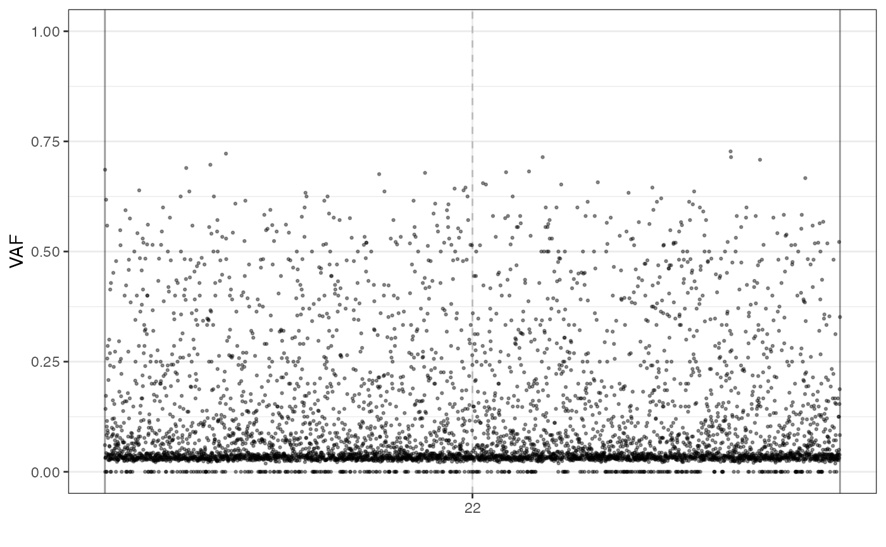
# plot the BAF of the mutations sequenced on the sample S_2_2
# over the reference genome
plot_BAF(f_seq, sample = "S_2_2")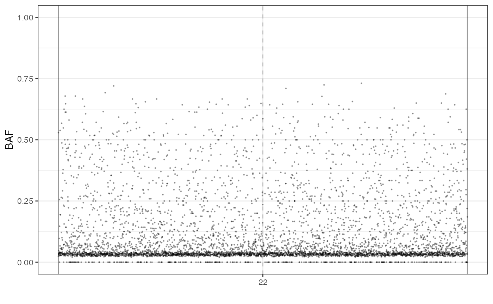
# plot the DR of the mutations sequenced on the sample S_2_2
# over the reference genome
plot_DR(f_seq, sample = "S_2_2")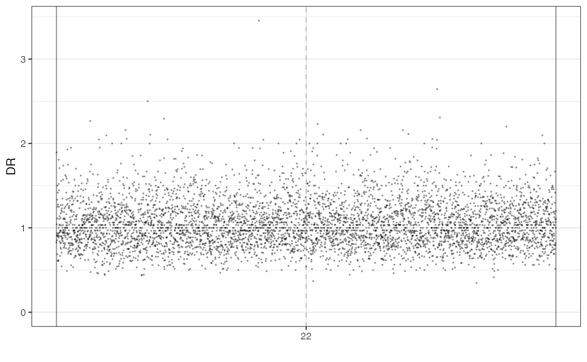
The VAF and the VAF marginal distributions can be plot too.
# plotting the VAF histogram
plot_VAF_histogram(f_seq, cuts = c(0.02, 1))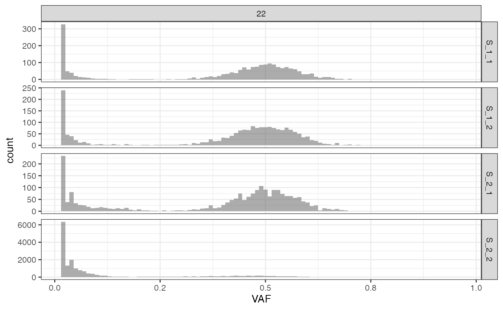
# plotting the VAF marginals
plot_VAF_marginals(f_seq, samples = c("S_1_1", "S_1_2", "S_2_2"))
#> [[1]]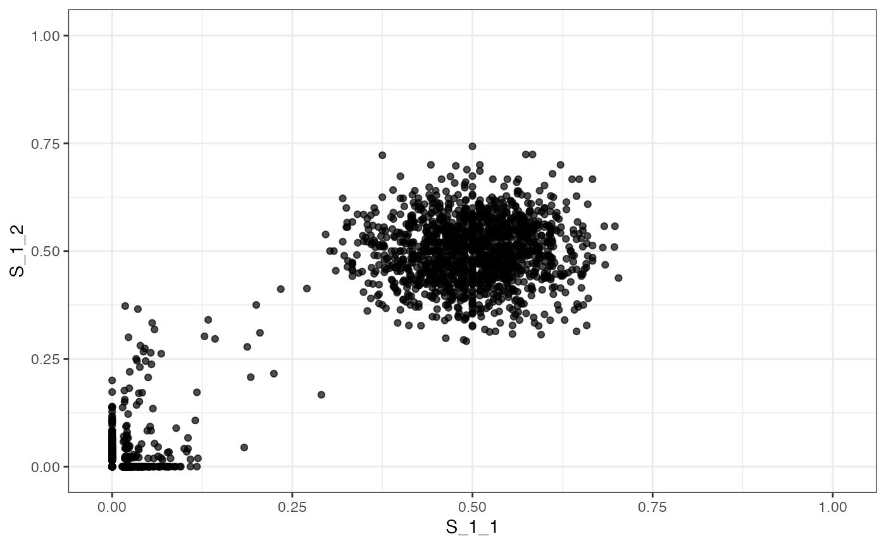
#>
#> [[2]]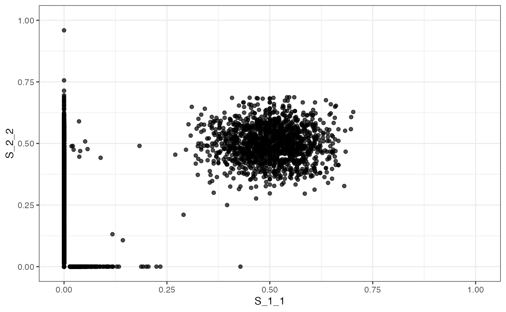
#>
#> [[3]]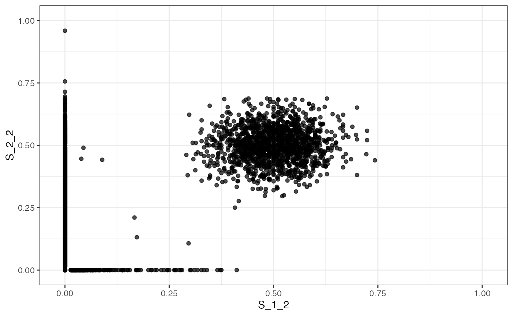
The VAF and the VAF marginal plots can be labelled.
# plotting the VAF histogram with labels
plot_VAF_histogram(f_seq, labels = f_seq["classes"], cuts = c(0.02, 1))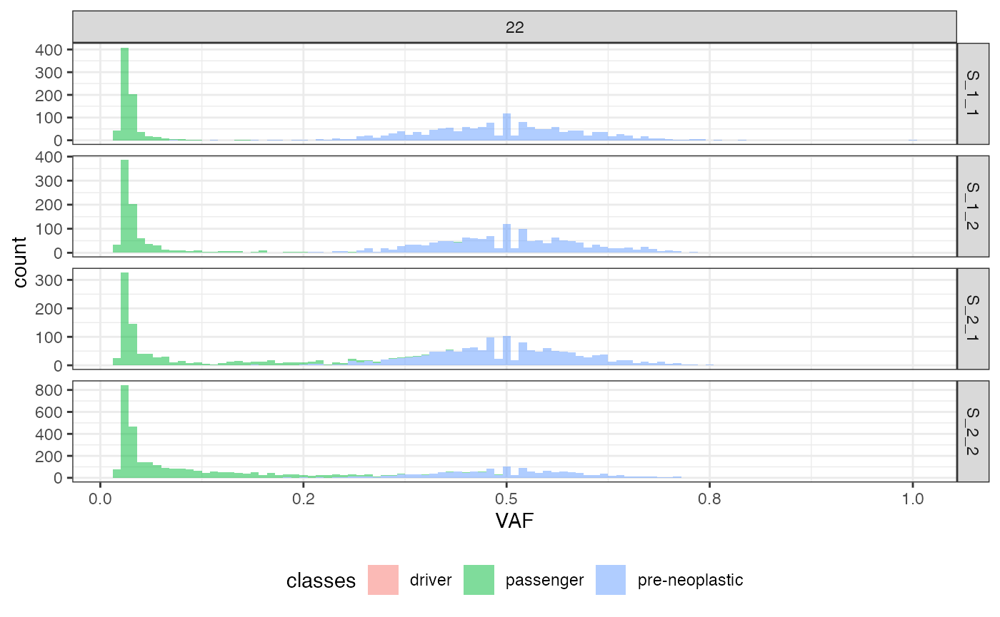
# plotting the VAF marginals and labelling it
plot_VAF_marginals(f_seq, samples = c("S_1_1", "S_1_2", "S_2_2"),
labels = f_seq["classes"])
#> [[1]]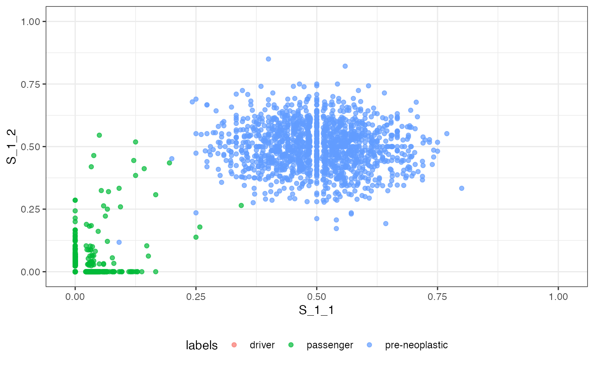
#>
#> [[2]]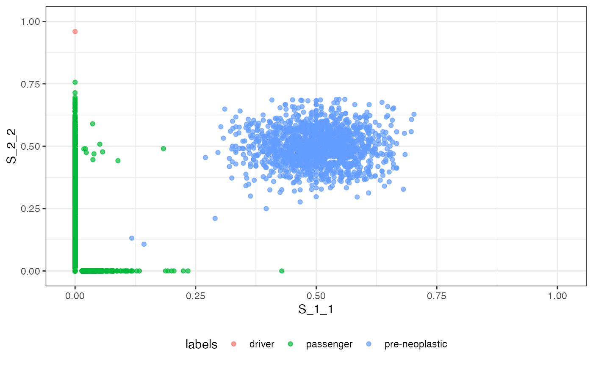
#>
#> [[3]]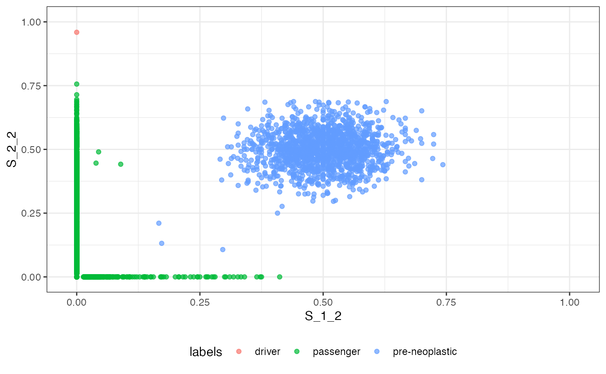
Saving the Simulated Reads
rRACES/RACE can also save the simulated reads in the SAM format (see
(Li et al. 2009)). By setting the optional
parameter write_SAM to TRUE, the function
simulate_seq() creates the directory
rRACES_SAM and saves the SAM files in it. Each file is
named after one of the reference genome chromosomes and contains the
simulated reads. The reads are split into read groups corresponding to
the collected samples.
seq_results <- simulate_seq(phylo_forest, coverage = 2.5, write_SAM = TRUE)
#> [█---------------------------------------] 0% [00m:00s] Found 22 [█---------------------------------------] 0% [00m:00s] Reading 22 [█---------------------------------------] 0% [00m:00s] Reading 22 [█---------------------------------------] 0% [00m:01s] Reading 22 [█---------------------------------------] 0% [00m:02s] Reading 22 [█---------------------------------------] 0% [00m:03s] Processing chr. 22 [█---------------------------------------] 0% [00m:09s] Processing chr. 22 [██--------------------------------------] 3% [00m:10s] Processing chr. 22 [███-------------------------------------] 6% [00m:11s] Processing chr. 22 [████------------------------------------] 9% [00m:12s] Processing chr. 22 [█████-----------------------------------] 12% [00m:13s] Processing chr. 22 [███████---------------------------------] 15% [00m:14s] Processing chr. 22 [████████--------------------------------] 18% [00m:15s] Processing chr. 22 [█████████-------------------------------] 21% [00m:16s] Processing chr. 22 [██████████------------------------------] 24% [00m:17s] Processing chr. 22 [███████████-----------------------------] 27% [00m:18s] Processing chr. 22 [█████████████---------------------------] 30% [00m:19s] Processing chr. 22 [██████████████--------------------------] 33% [00m:20s] Processing chr. 22 [███████████████-------------------------] 36% [00m:21s] Processing chr. 22 [████████████████------------------------] 39% [00m:22s] Processing chr. 22 [█████████████████-----------------------] 42% [00m:23s] Processing chr. 22 [███████████████████---------------------] 45% [00m:24s] Processing chr. 22 [████████████████████--------------------] 48% [00m:25s] Processing chr. 22 [████████████████████--------------------] 49% [00m:26s] Processing chr. 22 [█████████████████████-------------------] 51% [00m:27s] Processing chr. 22 [██████████████████████------------------] 52% [00m:28s] Processing chr. 22 [███████████████████████-----------------] 55% [00m:29s] Processing chr. 22 [███████████████████████-----------------] 57% [00m:30s] Processing chr. 22 [████████████████████████----------------] 58% [00m:31s] Processing chr. 22 [█████████████████████████---------------] 61% [00m:32s] Processing chr. 22 [██████████████████████████--------------] 63% [00m:33s] Processing chr. 22 [██████████████████████████--------------] 64% [00m:34s] Processing chr. 22 [███████████████████████████-------------] 66% [00m:35s] Processing chr. 22 [████████████████████████████------------] 68% [00m:36s] Processing chr. 22 [█████████████████████████████-----------] 70% [00m:37s] Processing chr. 22 [█████████████████████████████-----------] 72% [00m:38s] Processing chr. 22 [██████████████████████████████----------] 74% [00m:39s] Processing chr. 22 [███████████████████████████████---------] 76% [00m:40s] Processing chr. 22 [████████████████████████████████--------] 78% [00m:41s] Processing chr. 22 [████████████████████████████████--------] 78% [00m:42s] Processing chr. 22 [████████████████████████████████--------] 79% [00m:43s] Processing chr. 22 [████████████████████████████████--------] 79% [00m:44s] Processing chr. 22 [█████████████████████████████████-------] 80% [00m:45s] Processing chr. 22 [█████████████████████████████████-------] 81% [00m:46s] Processing chr. 22 [█████████████████████████████████-------] 81% [00m:47s] Processing chr. 22 [█████████████████████████████████-------] 82% [00m:48s] Processing chr. 22 [██████████████████████████████████------] 83% [00m:49s] Processing chr. 22 [██████████████████████████████████------] 83% [00m:50s] Processing chr. 22 [██████████████████████████████████------] 84% [00m:51s] Processing chr. 22 [███████████████████████████████████-----] 85% [00m:52s] Processing chr. 22 [███████████████████████████████████-----] 85% [00m:53s] Processing chr. 22 [███████████████████████████████████-----] 86% [00m:54s] Processing chr. 22 [███████████████████████████████████-----] 87% [00m:55s] Processing chr. 22 [███████████████████████████████████-----] 87% [00m:56s] Processing chr. 22 [████████████████████████████████████----] 88% [00m:57s] Processing chr. 22 [████████████████████████████████████----] 88% [00m:58s] Processing chr. 22 [████████████████████████████████████----] 89% [00m:59s] Processing chr. 22 [█████████████████████████████████████---] 90% [01m:00s] Processing chr. 22 [█████████████████████████████████████---] 90% [01m:01s] Processing chr. 22 [█████████████████████████████████████---] 91% [01m:02s] Processing chr. 22 [█████████████████████████████████████---] 91% [01m:03s] Processing chr. 22 [█████████████████████████████████████---] 92% [01m:04s] Processing chr. 22 [██████████████████████████████████████--] 93% [01m:05s] Processing chr. 22 [██████████████████████████████████████--] 94% [01m:06s] Processing chr. 22 [██████████████████████████████████████--] 94% [01m:07s] Processing chr. 22 [███████████████████████████████████████-] 95% [01m:08s] Processing chr. 22 [███████████████████████████████████████-] 96% [01m:09s] Processing chr. 22 [███████████████████████████████████████-] 96% [01m:10s] Processing chr. 22 [███████████████████████████████████████-] 97% [01m:11s] Processing chr. 22 [████████████████████████████████████████] 98% [01m:12s] Processing chr. 22 [████████████████████████████████████████] 99% [01m:13s] Processing chr. 22 [████████████████████████████████████████] 99% [01m:14s] Processing chr. 22 [████████████████████████████████████████] 99% [01m:15s] Processing chr. 22 [████████████████████████████████████████] 99% [01m:16s] Processing chr. 22 [████████████████████████████████████████] 99% [01m:17s] Processing chr. 22 [████████████████████████████████████████] 99% [01m:18s] Processing chr. 22 [████████████████████████████████████████] 99% [01m:19s] Processing chr. 22 [████████████████████████████████████████] 99% [01m:20s] Processing chr. 22 [████████████████████████████████████████] 99% [01m:21s] Processing chr. 22 [████████████████████████████████████████] 99% [01m:22s] Processing chr. 22 [████████████████████████████████████████] 99% [01m:23s] Processing chr. 22 [████████████████████████████████████████] 99% [01m:24s] Processing chr. 22 [████████████████████████████████████████] 99% [01m:25s] Processing chr. 22 [████████████████████████████████████████] 99% [01m:26s] Processing chr. 22 [████████████████████████████████████████] 99% [01m:27s] Processing chr. 22 [████████████████████████████████████████] 99% [01m:28s] Processing chr. 22 [████████████████████████████████████████] 99% [01m:29s] Processing chr. 22 [████████████████████████████████████████] 99% [01m:30s] Processing chr. 22 [████████████████████████████████████████] 99% [01m:31s] Processing chr. 22 [████████████████████████████████████████] 100% [01m:36s] Reads simulated
sam_files <- list.files("rRACES_SAM/")
ex_file <- paste("rRACES_SAM/", sam_files[1], sep = "")
for (line in readLines(ex_file, n = 10)) {
cat(paste(line, "\n"))
}
#> @HD VN:1.6 SO:unknown
#> @SQ SN:22 LN:51304566 AN:chr22, chromosome22,chromosome_22,chr_22
#> @RG ID:S_1_1 SM:S_1_1 PL:ILLUMINA
#> @RG ID:S_1_2 SM:S_1_2 PL:ILLUMINA
#> @RG ID:S_2_1 SM:S_2_1 PL:ILLUMINA
#> @RG ID:S_2_2 SM:S_2_2 PL:ILLUMINA
#> @RG ID:normal_sample SM:normal_sample PL:ILLUMINA
#> r2200000000000 0 22 24829765 93 150M * 0 0 CCCGGAGCCAGGGTGAGCCTGGGATCAGGGCCTGGTCTGCAGTGTCAGCATGGTGAGCTGGCGACGGGGCCCCAGGCTCAGCAGGGGCTCCCCAGGGCCAGCACGTGGCCAGCAGTCATGCCGAACTGACTGACCCCTATGGGCGCAGGG FFFFFFFFFFFFFFFFFFFFFFFFFFFFFFFFFFFFFFFFFFFFFFFFFFFFFFFFFFFFFFFFFFFFFFFFFFFFFFFFFFFFFFFFFFFFFFFFFFFFFFFFFFFFFFFFFFFFFFFFFFFFFFFFFFFFFFFFFFFFFFFFFFFFFF RG:Z:S_1_1 NM:i:0
#> r2200000000001 16 22 26095059 93 150M * 0 0 GCGGGCAGGAGGTGGGACTGTGTGCAGGAGCCCTCACTGCCTCAGCTGTGAACAAGGGGATAATGCCACCTGTTCTACTTCCTCACAAAGTTGCATGTGGGAGAACCTCAAAAATATGCCTGTCAGCCTCCTGTGCATTTTTCCTGTGTT FFFFFFFFFFFFFFFFFFFFFFFFFFFFFFFFFFFFFFFFFFFFFFFFFFFFFFFFFFFFFFFFFFFFFFFFFFFFFFFFFFFFFFFFFFFFFFFFFFFFFFFFFFFFFFFFFFFFFFFFFFFFFFFFFFFFFFFFFFFFFFFFFFFFFF RG:Z:S_1_1 NM:i:0
#> r2200000000002 16 22 27649479 93 150M * 0 0 TCTTATGCTTCTTGGATATCATCGGAGGGAAAACGGGGACTATGCAACAACAAAGAATGCAAGAAACACCCAGGGGAGCAGGGGTGGGGGCTTTCAATCGCCTGGAATCAATGCACAGTATTCCTGACTCTCGCTGGAATACTGTGGGTC FFFFFFFFFFFFFFFFFFFFFFFFFFFFFFFFFFFFFFFFFFFFFFFFFFFFFFFFFFFFFFFFFFFFFFFFFFFFFFFFFFFFFFFFFFFFFFFFFFFFFFFFFFFFFFFFFFFFFFFFFFFFFFFFFFFFFFFFFFFFFFFFFFFFFF RG:Z:S_1_1 NM:i:0Each SAM file contains the reads produced by simulating the
sequencing of all the samples. The command-line tools samtools can be used to
split the reads by sample.
foo@bar % samtools split -f "%*_%\!.sam" rRACES_SAM/chr_22.sam
foo@bar % ls chr_22_*
chr_22_S_1_1.sam chr_22_S_1_2.sam chr_22_S_2_1.sam chr_22_S_2_2.samThe resulting files are named after the samples, each containing the reads of only one sample.
Please refer to the samtools split
manual for more details.
The simulate_seq() parameter output_dir set
the SAM output directory. See the following section for usage examples
of this parameter.
Sample Purity
The sample purity represents the concentration of tumour cells in a sample. More formally, it is the ratio between the number of tumour cells in the sample and that of all the sample cells, either tumour or normal (i.e., cells having germline and pre-neoplastic mutations).
rRACES can simulate different sample purity in sequencing simulations.
# simulate the sequencing of a sample in which 70% of the cells are
# tumour cells
seq_results <- simulate_seq(phylo_forest, coverage = 2.5, purity = 0.7,
write_SAM = TRUE, output_dir = "SAM_0.7")
#> [█---------------------------------------] 0% [00m:00s] Found 22 [█---------------------------------------] 0% [00m:00s] Reading 22 [█---------------------------------------] 0% [00m:00s] Reading 22 [█---------------------------------------] 0% [00m:01s] Reading 22 [█---------------------------------------] 0% [00m:02s] Processing chr. 22 [█---------------------------------------] 0% [00m:10s] Processing chr. 22 [█---------------------------------------] 2% [00m:11s] Processing chr. 22 [███-------------------------------------] 5% [00m:12s] Processing chr. 22 [████------------------------------------] 8% [00m:13s] Processing chr. 22 [█████-----------------------------------] 11% [00m:14s] Processing chr. 22 [██████----------------------------------] 14% [00m:15s] Processing chr. 22 [███████---------------------------------] 17% [00m:16s] Processing chr. 22 [█████████-------------------------------] 20% [00m:17s] Processing chr. 22 [██████████------------------------------] 23% [00m:18s] Processing chr. 22 [███████████-----------------------------] 26% [00m:19s] Processing chr. 22 [████████████----------------------------] 29% [00m:20s] Processing chr. 22 [█████████████---------------------------] 32% [00m:21s] Processing chr. 22 [███████████████-------------------------] 35% [00m:22s] Processing chr. 22 [████████████████------------------------] 38% [00m:23s] Processing chr. 22 [█████████████████-----------------------] 40% [00m:24s] Processing chr. 22 [██████████████████----------------------] 43% [00m:25s] Processing chr. 22 [███████████████████---------------------] 46% [00m:26s] Processing chr. 22 [████████████████████--------------------] 48% [00m:27s] Processing chr. 22 [█████████████████████-------------------] 50% [00m:28s] Processing chr. 22 [█████████████████████-------------------] 52% [00m:29s] Processing chr. 22 [██████████████████████------------------] 54% [00m:30s] Processing chr. 22 [███████████████████████-----------------] 56% [00m:31s] Processing chr. 22 [████████████████████████----------------] 58% [00m:32s] Processing chr. 22 [█████████████████████████---------------] 60% [00m:33s] Processing chr. 22 [█████████████████████████---------------] 62% [00m:34s] Processing chr. 22 [██████████████████████████--------------] 64% [00m:35s] Processing chr. 22 [███████████████████████████-------------] 66% [00m:36s] Processing chr. 22 [███████████████████████████-------------] 67% [00m:37s] Processing chr. 22 [████████████████████████████------------] 69% [00m:38s] Processing chr. 22 [█████████████████████████████-----------] 71% [00m:39s] Processing chr. 22 [██████████████████████████████----------] 73% [00m:40s] Processing chr. 22 [███████████████████████████████---------] 75% [00m:41s] Processing chr. 22 [███████████████████████████████---------] 77% [00m:42s] Processing chr. 22 [████████████████████████████████--------] 78% [00m:43s] Processing chr. 22 [████████████████████████████████--------] 78% [00m:44s] Processing chr. 22 [████████████████████████████████--------] 79% [00m:45s] Processing chr. 22 [█████████████████████████████████-------] 80% [00m:46s] Processing chr. 22 [█████████████████████████████████-------] 81% [00m:47s] Processing chr. 22 [█████████████████████████████████-------] 81% [00m:48s] Processing chr. 22 [█████████████████████████████████-------] 82% [00m:49s] Processing chr. 22 [██████████████████████████████████------] 83% [00m:50s] Processing chr. 22 [██████████████████████████████████------] 83% [00m:51s] Processing chr. 22 [██████████████████████████████████------] 84% [00m:52s] Processing chr. 22 [███████████████████████████████████-----] 85% [00m:53s] Processing chr. 22 [███████████████████████████████████-----] 85% [00m:54s] Processing chr. 22 [███████████████████████████████████-----] 86% [00m:55s] Processing chr. 22 [███████████████████████████████████-----] 87% [00m:56s] Processing chr. 22 [███████████████████████████████████-----] 87% [00m:57s] Processing chr. 22 [███████████████████████████████████-----] 87% [00m:58s] Processing chr. 22 [████████████████████████████████████----] 88% [00m:59s] Processing chr. 22 [████████████████████████████████████----] 88% [01m:00s] Processing chr. 22 [████████████████████████████████████----] 89% [01m:01s] Processing chr. 22 [█████████████████████████████████████---] 90% [01m:02s] Processing chr. 22 [█████████████████████████████████████---] 90% [01m:03s] Processing chr. 22 [█████████████████████████████████████---] 91% [01m:04s] Processing chr. 22 [█████████████████████████████████████---] 92% [01m:05s] Processing chr. 22 [██████████████████████████████████████--] 93% [01m:06s] Processing chr. 22 [██████████████████████████████████████--] 93% [01m:07s] Processing chr. 22 [██████████████████████████████████████--] 94% [01m:08s] Processing chr. 22 [███████████████████████████████████████-] 95% [01m:09s] Processing chr. 22 [███████████████████████████████████████-] 95% [01m:10s] Processing chr. 22 [███████████████████████████████████████-] 96% [01m:11s] Processing chr. 22 [███████████████████████████████████████-] 97% [01m:12s] Processing chr. 22 [████████████████████████████████████████] 98% [01m:13s] Processing chr. 22 [████████████████████████████████████████] 98% [01m:14s] Processing chr. 22 [████████████████████████████████████████] 99% [01m:15s] Processing chr. 22 [████████████████████████████████████████] 99% [01m:16s] Processing chr. 22 [████████████████████████████████████████] 99% [01m:17s] Processing chr. 22 [████████████████████████████████████████] 99% [01m:18s] Processing chr. 22 [████████████████████████████████████████] 99% [01m:19s] Processing chr. 22 [████████████████████████████████████████] 99% [01m:20s] Processing chr. 22 [████████████████████████████████████████] 99% [01m:21s] Processing chr. 22 [████████████████████████████████████████] 99% [01m:22s] Processing chr. 22 [████████████████████████████████████████] 99% [01m:23s] Processing chr. 22 [████████████████████████████████████████] 99% [01m:24s] Processing chr. 22 [████████████████████████████████████████] 99% [01m:25s] Processing chr. 22 [████████████████████████████████████████] 99% [01m:26s] Processing chr. 22 [████████████████████████████████████████] 99% [01m:27s] Processing chr. 22 [████████████████████████████████████████] 99% [01m:28s] Processing chr. 22 [████████████████████████████████████████] 99% [01m:29s] Processing chr. 22 [████████████████████████████████████████] 99% [01m:30s] Processing chr. 22 [████████████████████████████████████████] 99% [01m:31s] Processing chr. 22 [████████████████████████████████████████] 99% [01m:32s] Processing chr. 22 [████████████████████████████████████████] 100% [01m:36s] Reads simulated
sam_files <- list.files("SAM_0.7/")
ex_file <- paste("SAM_0.7/", sam_files[1], sep = "")
for (line in readLines(ex_file, n = 10)) {
cat(paste(line, "\n"))
}
#> @HD VN:1.6 SO:unknown
#> @SQ SN:22 LN:51304566 AN:chr22, chromosome22,chromosome_22,chr_22
#> @RG ID:S_1_1 SM:S_1_1 PL:ILLUMINA
#> @RG ID:S_1_2 SM:S_1_2 PL:ILLUMINA
#> @RG ID:S_2_1 SM:S_2_1 PL:ILLUMINA
#> @RG ID:S_2_2 SM:S_2_2 PL:ILLUMINA
#> @RG ID:normal_sample SM:normal_sample PL:ILLUMINA
#> r2200000000000 16 22 24241870 93 150M * 0 0 ATTGACAGTAAGGATGCTGATGACTATTAGTGAATAAAAAGCCAGAATGAAGGACATGAACTTACACACATTTAACATTTCGGCACAGGTCAAGTAACTACAATAACCTATATACAAGACAAACAAGACAAAGTATATTTAGAATACATG FFFFFFFFFFFFFFFFFFFFFFFFFFFFFFFFFFFFFFFFFFFFFFFFFFFFFFFFFFFFFFFFFFFFFFFFFFFFFFFFFFFFFFFFFFFFFFFFFFFFFFFFFFFFFFFFFFFFFFFFFFFFFFFFFFFFFFFFFFFFFFFFFFFFFF RG:Z:S_1_1 NM:i:0
#> r2200000000001 0 22 35233547 93 150M * 0 0 GGATCTCAAACATGCTTTCTTTACTATTCCTTTGCACCTTTCATCCCAGCCTCTCTTCGCTTTCACTTGGACTGACCCTGACACCCATCAGGCTCAGCAAATTACGTGGGCTGTACTGCCACAAGGCTTCACAGACAGCCCCCATTACTT FFFFFFFFFFFFFFFFFFFFFFFFFFFFFFFFFFFFFFFFFFFFFFFFFFFFFFFFFFFFFFFFFFFFFFFFFFFFFFFFFFFFFFFFFFFFFFFFFFFFFFFFFFFFFFFFFFFFFFFFFFFFFFFFFFFFFFFFFFFFFFFFFFFFFF RG:Z:S_1_1 NM:i:0
#> r2200000000002 16 22 40342397 93 150M * 0 0 TTTACATGGGTCTCATGCATTACAAGAAGGGGGCCACTATTTTAACTCAATTCAAAAATGTTAAAATCAAAATTCCCAAAATGTACTTGGTTTATAATATATCATAAAATAAGTAATCTGACCAATTGAGCCTCCCAACTCGAAGACCAA FFFFFFFFFFFFFFFFFFFFFFFFFFFFFFFFFFFFFFFFFFFFFFFFFFFFFFFFFFFFFFFFFFFFFFFFFFFFFFFFFFFFFFFFFFFFFFFFFFFFFFFFFFFFFFFFFFFFFFFFFFFFFFFFFFFFFFFFFFFFFFFFFFFFFF RG:Z:S_1_1 NM:i:0The default value of the parameter purity is 1, i.e.,
simulate_seq() assumes all the cells in the sample to be
neoplastic by default.
The function simulate_normal_seq() simulates the
sequencing of a sample whose cells have germline and tumoral
pre-neoplastic mutations. The pre-neoplastic mutations can be avoided by
setting the optional parameter with_preneoplastic.
Simulating Sequencing Errors
To simulate sequencing errors, users need to specify a sequencer to
the function simulate_seq().
At the moment, there are only two classes implementing sequencers:
the ErrorlessIlluminaSequencer class and the
BasicIlluminaSequencer classes.
The ErrorlessIlluminaSequencer Class
This class models a perfect Illumina sequencer. No sequencing errors are produced, and all the bases have the maximum quality.
The following code simulates the sequencing by using this kind of sequencer.
# build an error-less Illumina sequencer
no_error_seq <- ErrorlessIlluminaSequencer()
# let us simulate a 2.5x sequencing of the four sample
# on the error-less sequencer
seq_results <- simulate_seq(phylo_forest, sequencer = no_error_seq,
coverage = 2.5)The BasicIlluminaSequencer Class
This class sets a sequencing error rate independent of the base in which the error occurs, from the position of the base in the read and from the position of the read on the genome.
# build a basic Illumina sequencer model in which errors occur
# at rate 4e-3 per base
basic_seq <- BasicIlluminaSequencer(4e-3)
# let us simulate a 2.5x sequencing of the four sample
# on the error-less sequencer
seq_results <- simulate_seq(phylo_forest, sequencer = basic_seq,
coverage = 2.5, write_SAM = TRUE)Chromosome Sequencing
The function simulate_seq() allows users to simulate the
sequencing of a selection of the reference chromosomes by using the
parameter chromosomes.
# let us simulate a 2.5x sequencing of the chromosomes 22 and
# X of the four sample
seq_results <- simulate_seq(phylo_forest, chromosomes = c("22", "X"),
coverage = 2.5, write_SAM = TRUE)Updating the SAM Output Directory
Users may want to simulate sequencing in multiple steps, for
instance, by splitting it by chromosome or reaching the aimed coverage
with different simulations. However, rRACES prevents successive writing
in the same directory by default. The Boolean parameter
update_SAM allows multiple writing in the same
directory.
# the default SAM directory already exists
sam_files <- list.files("rRACES_SAM/")
# since the default save directory already exists, any call to
# `simulate_seq` throws an error
tryCatch(
{
simulate_seq(phylo_forest, coverage = 2.5, write_SAM = TRUE)
},
error = function(e) {
print(e)
}
)
#> <std::domain_error in eval(expr, envir): "rRACES_SAM" already exists>
# setting `update_SAM` to TRUE enables successive writing in
# the output directory
seq_results <- simulate_seq(phylo_forest, coverage = 2.5,
write_SAM = TRUE, update_SAM = TRUE)
#> [█---------------------------------------] 0% [00m:00s] Found 22 [█---------------------------------------] 0% [00m:00s] Reading 22 [█---------------------------------------] 0% [00m:01s] Reading 22 [█---------------------------------------] 0% [00m:02s] Reading 22 [█---------------------------------------] 0% [00m:02s] Processing chr. 22 [█---------------------------------------] 0% [00m:08s] Processing chr. 22 [██--------------------------------------] 3% [00m:09s] Processing chr. 22 [███-------------------------------------] 5% [00m:10s] Processing chr. 22 [████------------------------------------] 8% [00m:11s] Processing chr. 22 [█████-----------------------------------] 11% [00m:12s] Processing chr. 22 [██████----------------------------------] 14% [00m:13s] Processing chr. 22 [███████---------------------------------] 17% [00m:14s] Processing chr. 22 [█████████-------------------------------] 20% [00m:15s] Processing chr. 22 [██████████------------------------------] 23% [00m:16s] Processing chr. 22 [███████████-----------------------------] 26% [00m:17s] Processing chr. 22 [████████████----------------------------] 29% [00m:18s] Processing chr. 22 [█████████████---------------------------] 32% [00m:19s] Processing chr. 22 [███████████████-------------------------] 35% [00m:20s] Processing chr. 22 [████████████████------------------------] 38% [00m:21s] Processing chr. 22 [█████████████████-----------------------] 41% [00m:22s] Processing chr. 22 [██████████████████----------------------] 44% [00m:23s] Processing chr. 22 [███████████████████---------------------] 47% [00m:24s] Processing chr. 22 [████████████████████--------------------] 49% [00m:25s] Processing chr. 22 [█████████████████████-------------------] 51% [00m:26s] Processing chr. 22 [█████████████████████-------------------] 52% [00m:27s] Processing chr. 22 [██████████████████████------------------] 54% [00m:28s] Processing chr. 22 [███████████████████████-----------------] 56% [00m:29s] Processing chr. 22 [████████████████████████----------------] 58% [00m:30s] Processing chr. 22 [█████████████████████████---------------] 60% [00m:31s] Processing chr. 22 [█████████████████████████---------------] 62% [00m:32s] Processing chr. 22 [██████████████████████████--------------] 64% [00m:33s] Processing chr. 22 [███████████████████████████-------------] 66% [00m:34s] Processing chr. 22 [████████████████████████████------------] 68% [00m:35s] Processing chr. 22 [█████████████████████████████-----------] 70% [00m:36s] Processing chr. 22 [█████████████████████████████-----------] 72% [00m:37s] Processing chr. 22 [██████████████████████████████----------] 74% [00m:38s] Processing chr. 22 [███████████████████████████████---------] 76% [00m:39s] Processing chr. 22 [███████████████████████████████---------] 77% [00m:40s] Processing chr. 22 [████████████████████████████████--------] 78% [00m:41s] Processing chr. 22 [████████████████████████████████--------] 79% [00m:42s] Processing chr. 22 [████████████████████████████████--------] 79% [00m:43s] Processing chr. 22 [█████████████████████████████████-------] 80% [00m:44s] Processing chr. 22 [█████████████████████████████████-------] 80% [00m:45s] Processing chr. 22 [█████████████████████████████████-------] 81% [00m:46s] Processing chr. 22 [█████████████████████████████████-------] 81% [00m:47s] Processing chr. 22 [█████████████████████████████████-------] 82% [00m:48s] Processing chr. 22 [█████████████████████████████████-------] 82% [00m:49s] Processing chr. 22 [██████████████████████████████████------] 83% [00m:50s] Processing chr. 22 [██████████████████████████████████------] 84% [00m:51s] Processing chr. 22 [███████████████████████████████████-----] 85% [00m:52s] Processing chr. 22 [███████████████████████████████████-----] 85% [00m:53s] Processing chr. 22 [███████████████████████████████████-----] 86% [00m:54s] Processing chr. 22 [███████████████████████████████████-----] 87% [00m:55s] Processing chr. 22 [███████████████████████████████████-----] 87% [00m:56s] Processing chr. 22 [████████████████████████████████████----] 88% [00m:57s] Processing chr. 22 [████████████████████████████████████----] 88% [00m:58s] Processing chr. 22 [████████████████████████████████████----] 89% [00m:59s] Processing chr. 22 [█████████████████████████████████████---] 90% [01m:00s] Processing chr. 22 [█████████████████████████████████████---] 90% [01m:01s] Processing chr. 22 [█████████████████████████████████████---] 91% [01m:02s] Processing chr. 22 [█████████████████████████████████████---] 92% [01m:03s] Processing chr. 22 [██████████████████████████████████████--] 93% [01m:04s] Processing chr. 22 [██████████████████████████████████████--] 93% [01m:05s] Processing chr. 22 [██████████████████████████████████████--] 94% [01m:06s] Processing chr. 22 [███████████████████████████████████████-] 95% [01m:07s] Processing chr. 22 [███████████████████████████████████████-] 95% [01m:08s] Processing chr. 22 [███████████████████████████████████████-] 96% [01m:09s] Processing chr. 22 [███████████████████████████████████████-] 97% [01m:10s] Processing chr. 22 [███████████████████████████████████████-] 97% [01m:11s] Processing chr. 22 [████████████████████████████████████████] 98% [01m:12s] Processing chr. 22 [████████████████████████████████████████] 99% [01m:13s] Processing chr. 22 [████████████████████████████████████████] 99% [01m:14s] Processing chr. 22 [████████████████████████████████████████] 99% [01m:15s] Processing chr. 22 [████████████████████████████████████████] 99% [01m:16s] Processing chr. 22 [████████████████████████████████████████] 99% [01m:17s] Processing chr. 22 [████████████████████████████████████████] 99% [01m:18s] Processing chr. 22 [████████████████████████████████████████] 99% [01m:19s] Processing chr. 22 [████████████████████████████████████████] 99% [01m:20s] Processing chr. 22 [████████████████████████████████████████] 99% [01m:21s] Processing chr. 22 [████████████████████████████████████████] 99% [01m:22s] Processing chr. 22 [████████████████████████████████████████] 99% [01m:23s] Processing chr. 22 [████████████████████████████████████████] 99% [01m:24s] Processing chr. 22 [████████████████████████████████████████] 99% [01m:25s] Processing chr. 22 [████████████████████████████████████████] 99% [01m:26s] Processing chr. 22 [████████████████████████████████████████] 99% [01m:27s] Processing chr. 22 [████████████████████████████████████████] 99% [01m:28s] Processing chr. 22 [████████████████████████████████████████] 99% [01m:29s] Processing chr. 22 [████████████████████████████████████████] 99% [01m:30s] Processing chr. 22 [████████████████████████████████████████] 100% [01m:34s] Reads simulatedWhen the output directory already contains a SAM file associated with
a chromosome, the alignments on that chromosome are saved in a file
whose name is the first available, having the format
"chr_{chromosome name}_{natural number}.sam".
list.files("rRACES_SAM/")
#> [1] "chr_22_0.sam" "chr_22.sam"